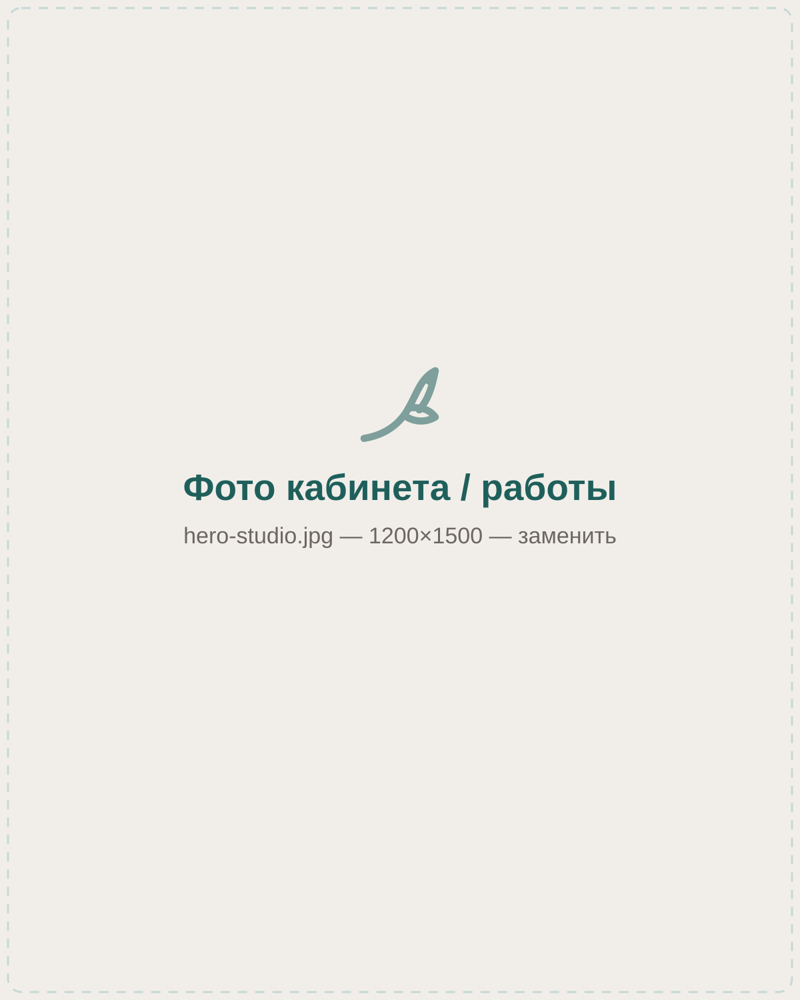
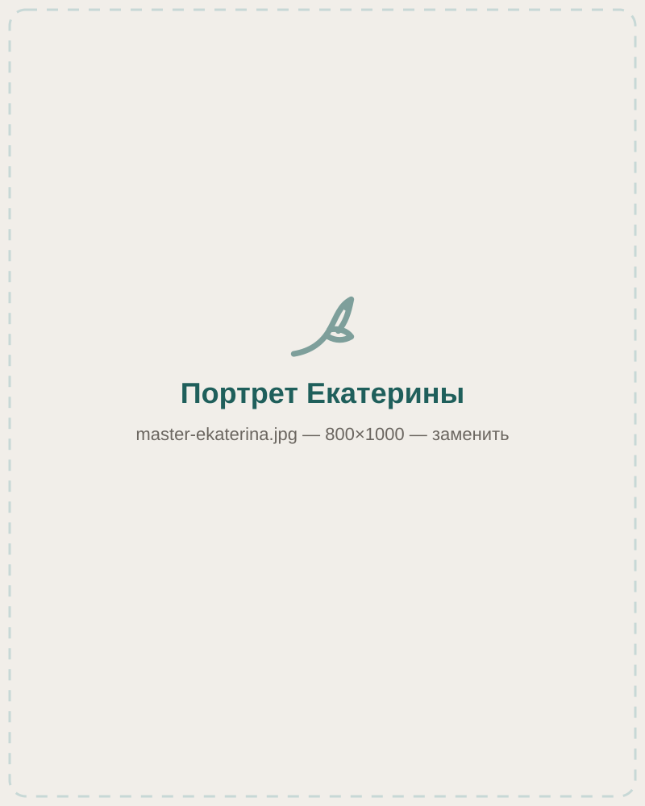
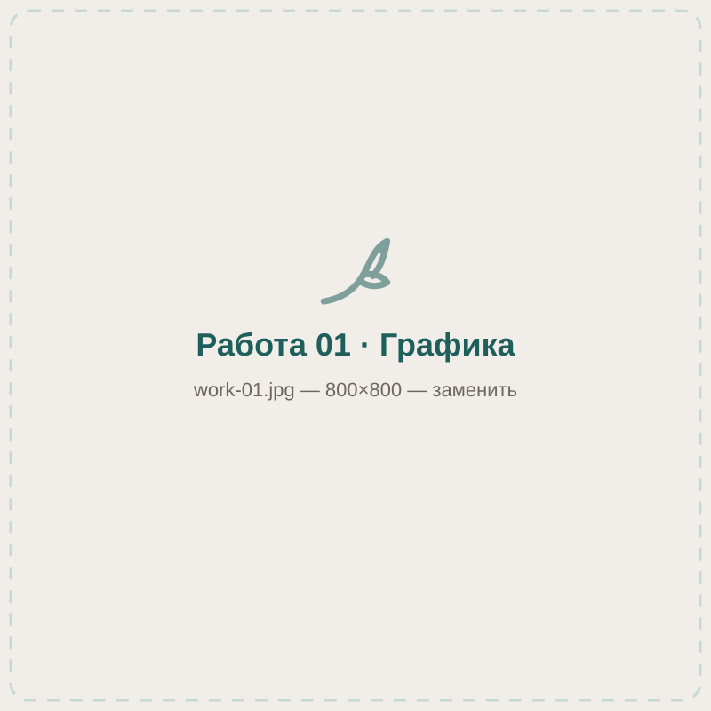
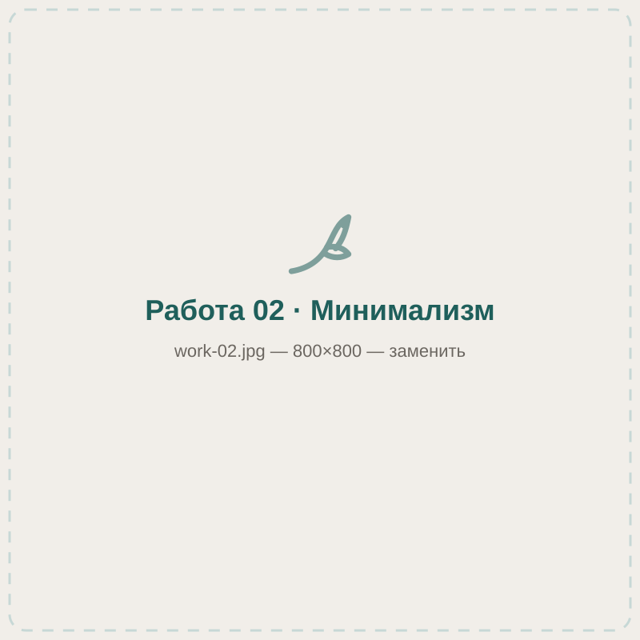
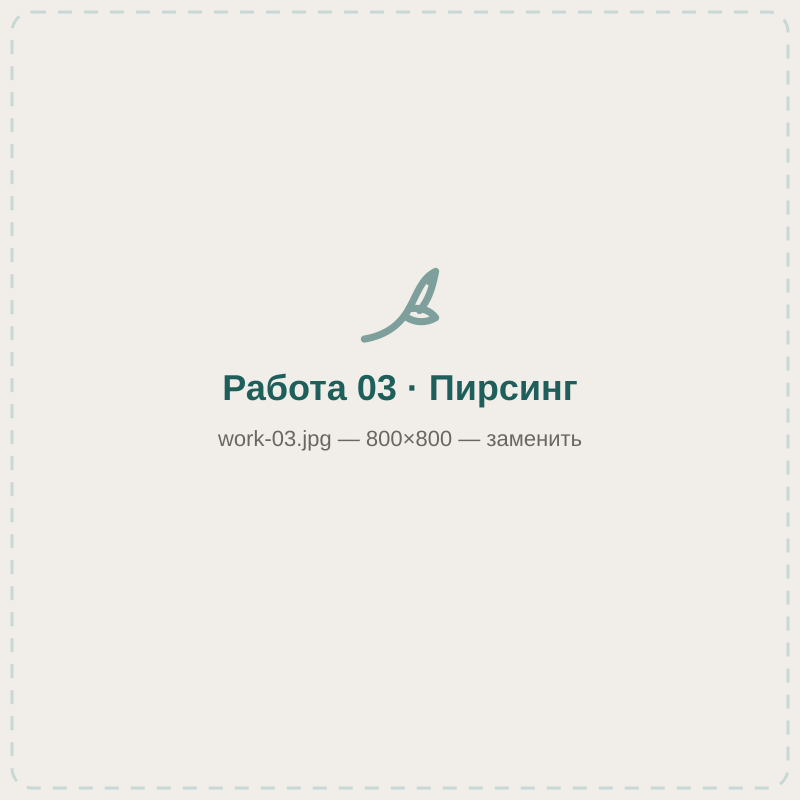
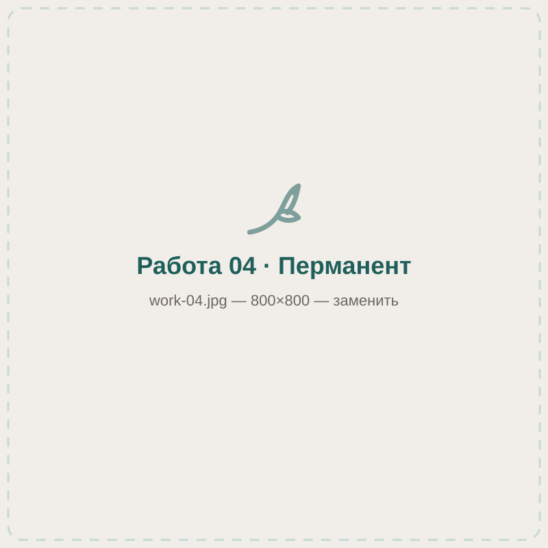
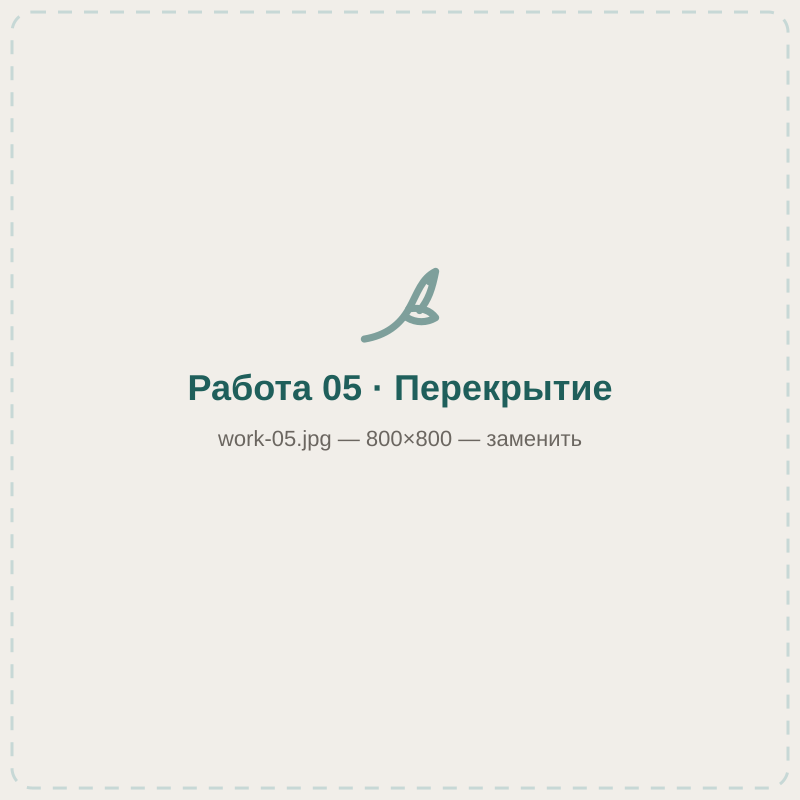
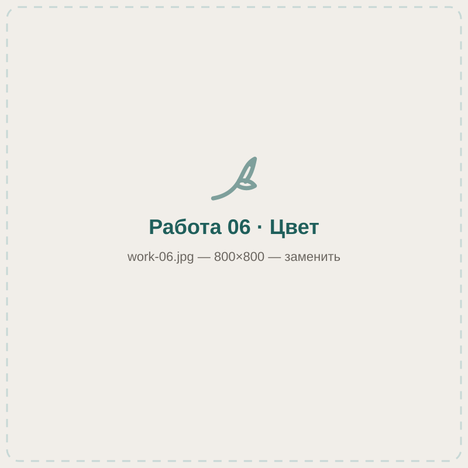

Прокалывали ребёнку ушки, очень понравилось отношение мастера, сразу расположила к себе нашу девочку. По окончанию ребёнку вручили диплом за смелость и сладкий подарок
Тату, пирсинг и перманент в центре Красноярска. Мастера с 2005 года.
Салон «Колибри» на Кирова, 37. Ведёт Екатерина — 19 лет практики и медицинское образование. Иглу вскрываем при вас, рекомендации по уходу выдаём на бумаге, а не «на словах».
- 2005год начала практики
- 19лет у главного мастера
- 4,8на 2ГИС, 335 оценок
- 10–20ежедневно, по записи

01 · Куда вам
Три разных потока. Выберите свой, чтобы не листать лишнее.
Разделы сайта
Для клиентов
Тату, пирсинг, перманент
Услуги, цены, как проходит сеанс и сколько идёт заживление. Запись на консультацию бесплатная.
Смотреть услуги Для будущих мастеровОбучение
Тату, пирсинг и татуаж с нуля. Индивидуально, с отработкой на практике и поддержкой после курса.
Программы и стоимость Для действующих мастеровОборудование Biomaser
Мы официальный дилер: аппараты, картриджи и пигменты для перманентного макияжа. Отгружаем по России.
Каталог и заявка
02 · Безопасность
Самое важное на этой странице. Если что-то из списка не выполнено — уходите из любого салона.
Иглу вскрываем при вас
Мы не просим верить на слово. Каждый пункт можно проверить глазами прямо на приёме — и мы сами предложим это сделать.
-
Иглы одноразовые, упаковку вскрываем при клиенте
Вы видите целый блистер до прокола и пустой после. Использованная игла уходит в контейнер при вас.
-
Инструмент проходит автоклав
Многоразовые зажимы и щипцы стерилизуются паром под давлением. Индикатор стерильности показываем по просьбе.
-
У мастера медицинское образование
Екатерина понимает анатомию зоны прокола и знает, что делать при отёке или реакции. Это не «набитая рука», а профессия.
-
Уход выдаём на бумаге
Печатная памятка: чем обрабатывать, сколько раз в день, чего нельзя и на какой день ждать чего. Плюс связь с мастером в мессенджере.
-
Один клиент — один слот
Работаем только по записи, поэтому в кабинете вы одни и вас не торопят. Консультация перед процедурой — без оплаты.
-
Мы никуда не денемся
Салон на одном адресе с 2016 года, а практика мастера идёт с 2005-го. Если что-то пойдёт не так с заживлением — приходите, посмотрим бесплатно.
03 · Услуги
Рядом с каждой услугой — честная оценка ощущений и срок заживления.
Что мы делаем
Цена зависит от размера, зоны и сложности. Точную сумму называем на консультации — до неё вы ничего не платите и ни к чему не обязаны.
Художественная татуировка
от 5 000 ₽Эскиз рисуем под вас. Маленькая работа — один сеанс, крупная — несколько с перерывом на заживление.
3 из 5 — терпимо, но долго Заживление 3–4 неделиПирсинг
от 1 500 ₽Уши, лицо, тело. Прокол иглой, не пистолетом — кроме детских мочек. Украшение подбираем по анатомии.
1–3 из 5 — зависит от зоны Заживление от 6 недельДетский прокол ушей
2 500 ₽Пистолетом, оба уха сразу, серёжки уже в стоимости. В конце — диплом за смелость и сладкий подарок.
1 из 5 — три секунды Заживление 6–8 недельПерманентный макияж
от 7 000 ₽Брови, губы, межресничка. Работаем с анестезией и берёмся за коррекцию чужих работ.
2 из 5 — под анестезией Заживление 4 недели + коррекцияЛазерное удаление
от 3 000 ₽Тату и неудачный перманент. Убираем полностью или осветляем под перекрытие. Курс из нескольких сеансов.
3 из 5 — резко, но быстро Перерыв между сеансами 6–8 недельПерекрытие чужих работ
от 6 000 ₽Старая или неудачная татуировка превращается в новую. Иногда нужен один сеанс лазера перед перекрытием — скажем честно.
3 из 5 — как обычная тату Заживление 3–4 неделиПолный прайс и из чего складывается цена
Скарификация и продажа расходников — по отдельному запросу, спрашивайте у мастера.
04 · Больно ли это
Вопрос, который чаще всего не решаются задать вслух.
Честно про ощущения
Мы оценили каждый прокол по пятибалльной шкале и подписали словами, на что это похоже. Нажмите на точку — или выберите зону в списке.
Мочка уха
1 500 ₽- Ощущения
- 1 из 5 — почти без ощущений, три секунды
- Заживление
- 6–8 недель
- Украшение
- титановая гвоздика, входит в цену
Шкала — усреднённая. Порог чувствительности у всех разный, и это нормально. На консультации мастер спросит про самочувствие и при необходимости предложит анестезию. Все виды проколов
05 · Мастер
К нам приходят не «в салон», а к конкретному человеку.

Екатерина
Ведущий мастер и основатель. Начала практику в 2005 году в салоне «Катерина», в 2016-м открыла «Колибри».
- 19 лет практики: татуировка, пирсинг, перманентный макияж
- Медицинское образование — работа с анатомией и осложнениями
- Ведёт обучение по тату, пирсингу и татуажу
- Берётся за коррекцию и перекрытие чужих работ
- Умеет работать с детьми: спокойно, без «сейчас будет больно»
06 · Работы
Своё, не из интернета. Все фото сделаны в салоне.
Портфолио
Если вы ещё не решили, что именно хотите, — это нормально. Покажите пару понравившихся работ, и мастер соберёт из них эскиз под вашу зону.






07 · Отзывы
Цитаты приведены дословно с площадок.
Что пишут
Давно хотела проколоть губу, но очень боялась, однако это оказалось очень быстро и не страшно
Даже иголочку показала, что она новенькая в упаковке, это для меня тоже важно
Посещаю это место почти 5 лет. Сделала здесь 3 татуировки и 5 проколов
08 · Как дойти
Кирова, 37 — цокольный этаж
- Адрес
- Красноярск, ул. Кирова, 37. Вход со стороны улицы, спуск вниз.
- Телефон
- +7 (391) 292-59-21
- WhatsApp и Telegram
- +7 (950) 995-02-17
- Режим работы
- Ежедневно 10:00–20:00, только по предварительной записи
- ВКонтакте
- vk.com/club164994415
Мы на цокольном этаже — вывеска видна только вблизи. Если не нашли вход, позвоните, и мы встретим вас у дверей.
Здесь будет карта.
Вставьте iframe Яндекс.Карт или 2ГИС — инструкция в README.
Вставьте iframe Яндекс.Карт или 2ГИС — инструкция в README.